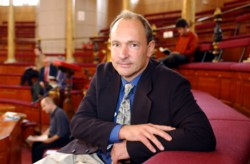

Sir Tim Berners-Lee

Biography
Sir Tim Berners-Lee invented the World Wide Web while at CERN, the European Particle Physics Laboratory, in 1989. He wrote the first web client and server in 1990. His specifications of URIs, HTTP and HTML were refined as Web technology spread.
He is the co-founder and CTO of Inrupt.com, a tech start-up that uses, promotes and helps develop the open source Solid platform. Solid aims to give people control and agency over their data, questioning many assumptions about how the web has to work. Solid technically is a new level of standard at the web layer, which adds features never put into the original spec, such as global single sign-on, universal access control, and a universal data API so that any app can store data in any storage place. Socially Solid is a movement away from much of the issues with the current WWW, and toward a world in which users are in control, and empowered by large amounts of data, private, shared, and public.
Sir Tim is the Founder, Emeritus Director, and an Honorary Member of the Board of Directors of the World Wide Web Consortium (W3C), a Web standards organization that he founded in 1994 which develops interoperable technologies (specifications, guidelines, software, and tools) to lead the Web to its full potential. He is a Director of the World Wide Web Foundation that was launched in 2009 to coordinate efforts to further the potential of the Web to benefit humanity.
He is the Emeritus 3Com Founders Professor of Engineering in the School of Engineering with a joint appointment in the Department of Electrical Engineering and Computer Science at the Laboratory for Computer Science and Artificial Intelligence ( CSAIL) at the Massachusetts Institute of Technology (MIT) where he founded the Decentralized Information Group (DIG).
Research at DIG and its collaborators was the origin of what became the Solid Platform.
He is also a Professor in the Computer Science Department, and an Honorary Student at Christ Church, at the University of Oxford, UK. He is President of and co-founder the Open Data Institute in London.
In 2001 he became a Fellow of the Royal Society. He has been the recipient of several international awards including the Japan Prize, the Prince of Asturias Foundation Prize, the Millennium Technology Prize and Germany's Die Quadriga award. In 2004 he was knighted by H.M. Queen Elizabeth and in 2007 he was awarded the Order of Merit. In 2009 he was elected a foreign associate of the National Academy of Sciences. He is the author of "Weaving the Web".
On March 18 2013, Sir Tim, along with Vinton Cerf, Robert Kahn, Louis Pouzin and Marc Andreesen, was awarded the Queen Elizabeth Prize for Engineering for "ground-breaking innovation in engineering that has been of global benefit to humanity."
On 4 April 2017, Sir Tim was awarded the ACM A.M. Turing Prize for inventing the World Wide Web, the first web browser, and the fundamental protocols and algorithms allowing the Web to scale. The Turing Prize, called the "Nobel Prize of Computing" is considered one of the most prestigious awards in Computer Science.
In September 2022, he won the Seoul Peace Prize for his work promoting data sovereignty and leading the movement to “decentralize” the web dominated by tech giants.
In September 2025, Sir Tim released his new book: This is for Everyone.
(Longer biography)
Contact
Email:
Chief of Staff cos@timbl.com
Address
W3C/MIT/CSAIL
32 Vassar Street
Cambridge MA 02139
USA
Other platforms
User Timbl on Wikipedia, ORCID, DBLP, OpenReview, Github
Talks, articles, interviews, etc
My blog on technology and society is called DesignIssues.
Videos:
"The World Wide Web - A Mid-Course Correction," The Richard Dimbleby Lecture, November 2019
A Magna Carta for the Web, TED talk, 2014
The Year Open Data Went Worldwide, TED talk, 2010
The Next Web, TED talk, 2009
Interviews:
- Rethinking Digital Access, BBC "Rethink" podcast, 24 June 2020
- World wide web founder scales up efforts to reshape internet, Forbes, 22 February 2020
- The World Wide Web Turns 30 Today. Here's How Its Inventor Thinks We Can Fix It, Time Magazine, 12 March 2019
- “I was devastated”: Tim Berners-Lee, the man who created the world wide web, has some regrets, Vanity Fair, 1 July 2018
- "The Web’s Creator Looks to Reinvent It”, New York Times, 7 June 2016
- "Putting data back into the hands of owners”, TechCrunch, 20 December 2016